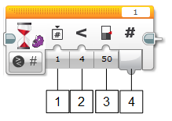
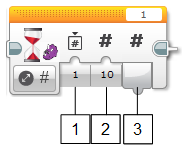
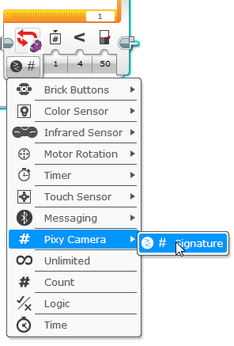

Pixy is a small, fast, easy-to-use, low-cost vision system that now works with LEGO EV3 and NXT. Pixy uses a color-based filtering algorithm to detect objects in the environment. Pixy remembers up to 7 different “color signatures”, which means that if you have 7 different objects with unique colors, Pixy’s color filtering algorithm will have no problem identifying them and distinguishing between them. If you need more than seven, you can use color codes.
The Pixy block appears below with labels showing the different inputs and outputs.

Pixy has two main modes of operation: General Mode and Signature Mode. General mode is the default and most common mode. It is selected by setting a 0 for the Signature input. The Signature input is indicated by the number 3 in the block picture above.
In General Mode, Pixy will report the largest object that it has detected, regardless of which signature or color code describes the object. And the Signature Output tells you the signature or the color code number of the object.
As a simple (somewhat contrived!) example, if you wanted to detect both green and purple dinosaurs, you could train signature 1 on the purple dinosaur and signature 2 on the green dinosaur. General Mode will then tell you if either types of dinosaurs are present. The Signature Output will be 1 if a purple dinosaur is present and is larger in the image than other green dinosaurs in the image. The Signature Output will be 2 if the if a green dinosaur is present and is larger in the image than other purple dinosaurs in the image. In either case, the X, Y, Width and Height outputs will report the location and size of the largest detected dinosaur. Note, that the dinosaurs may be the same physical size, but because one dinosaur is closer to the camera, it will appear larger in the image, and it will be the object that is reported.
In Signature Mode, Pixy will report the largest object that matches the signature number or color code set in the Signature input (3 in the block diagram above). And the Signature Output tells you how many objects Pixy has detected that match the specified signature or color code.
Similar to the example above, if you had two types of dinosaurs, purple and green, and you trained signature 1 on the purple dinosaur and signature 2 on the green dinosaur, you could restrict detection to only purple dinosaurs by setting the Signature input to 1. And similarly, you could restrict detection to only green dinosaurs by setting the Signature input to 2.
Note that the Signature input can be connected to another output within your program, so you can change the detected signature or color code number during runtime, and Pixy will change what it reports accordingly.
There are several ways to use conditions based on what Pixy detects in your program. Below we describe the different blocks that use “Pixy conditionals”.
This block available by selecting Compare in the Mode Selector as shown below:

Here is what the Compare Signature block looks like:

Compare Signature mode compares the number of detected objects to the Threshold Value (3) using the selected Compare Type (2). The True/False result is output in Compare Result (4), and the number of signatures is output in Number of Blocks (5) output.
These blocks is available through the Wait block, which is one of the Flow Control blocks. There are two options available: Wait Signature Compare and Wait Signature Change.
This block is available by selecting Compare then Signature as shown below:

Here is what the Wait Signature Compare block looks like:
The Wait Signature Compare block compares the number of detected objects to the Threshold Value (3) using the selected Compare Type (2). If the result is false, the program will be paused. If the result is true, the program will resume execution, and the number of detected objects is output in Number of Blocks (4).
This block is available by selecting Change then Signature as shown below:

Here is what the Wait Signature Change block looks like:
The Wait Change Signature block waits for a change in the number of specified objects detected by Pixy. If the number of objects that match the signature specified in the Signature input (1) changes by the number indicated in the Amount (2) input, the block returns, and the number of detected objects is output in Number of Blocks (3).
This block is available through the Loop block, which is one of the Flow Control blocks. Bring it up by selecting Pixy Camera then Signature in the Loop block Mode Selection.
Here is what the Loop Pixy Compare block looks like:

The Loop Pixy Compare block compares the number of detected objects to the Threshold Value (3) using the selected Compare Type (2). If the result is false, the loop will be continue looping. If the result is true, the loop will exit.
This block is available by selecting the Switch block which is one of the Flow Control blocks. Bring it up by selecting Pixy Camera, the Compare then Signature in the Switch block Mode Selection.

Here is what the Switch Pixy Compare block looks like:

The Switch Pixy Compare block compares the number of detected objects to the Threshold Value (3) using the selected Compare Type (2). If the result is false, the false case is executed. If the result is true, the true case is executed.